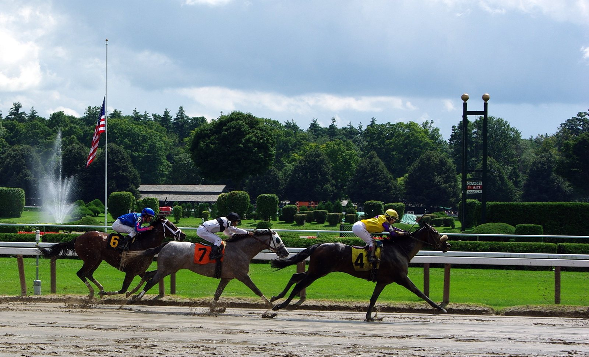

Los Baffert subastan a Bottle of Rouge, ganadora de Grado I, preñada de Gun Runner
Bob y Jill Baffert venderán en la Night of the Stars de Fasig-Tipton a Bottle of Rouge, vencedora del Del Mar Debutante (Grado I) en 2025, preñada del semental Gun Runner.

"Habrá lágrimas, seguro, porque Jill quiere mucho a sus caballos", admitió Bob Baffert. "Cuando tenemos potrancas tan valiosas, no podemos permitirnos quedárnoslas." La hija de Vino Rosso, de tres años, saldrá como lote 172 de la mano de Hill 'n' Dale at Xalapa. Hace tres años, el matrimonio ya vendió en esta misma sesión a Fun to Dream, otra ganadora de Grado I de su cría, por 1,9 millones de dólares a la japonesa K I Farm.
Bottle of Rouge costó 100.000 dólares de potranca. Jill la bautizó con un guiño a una letra de Harry Styles. Debutó a los dos años con un segundo puesto tras Himika, compañera de cuadra, y dos meses después rompió el maiden en Del Mar por 6 3/4 cuerpos sobre Super Corredora, futura campeona de la Breeders' Cup Juvenile.
En el Del Mar Debutante dio la sorpresa ante Explora, la favorita del propio Baffert, a la que alcanzó en la misma raya. "Para mí es incómodo ganar a uno de mis caballos con uno nuestro, pero Jill estaba entusiasmada", recordó el preparador.
Tras una Breeders' Cup decepcionante, a los tres años enlazó el Sunland Park Oaks y el Virginia Oaks sobre milla y un dieciseisavo. Una semana antes del Kentucky Oaks sufrió un contratiempo que exigía 90 días de parón. Quedó preñada de Gun Runner al primer intento.
El semental de Three Chimneys suma este año 25 yearlings vendidos por un millón de dólares o más y pelea por el título de líder general de 2026. Boyd Browning, de Fasig-Tipton, lo resumió así: "No se me ocurre un escenario mejor para un criador".
Hill 'n' Dale llevará también a Clicquot, hija de Quality Road y de una yegua por Tapit. Tiene cuatro años y ha ganado algo menos de un millón de dólares. El año pasado se impuso en el Cotillion Stakes (Grado I) ante tres ganadoras de Grado I y se quedó a las puertas de la colocación en la Breeders' Cup Distaff. Tras una sola salida este año y un descanso en verano, ha vuelto al trabajo suave y se ofrecerá como prospecto de carreras o de yegua de cría.
Por Martín Larrañeta